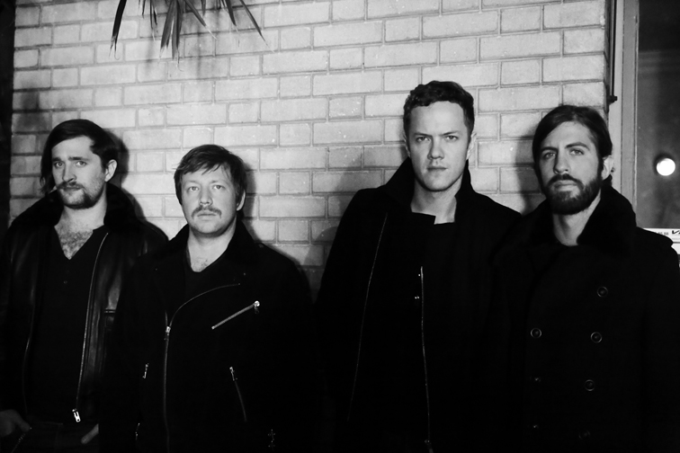

Описание
Imagine Dragons — американская поп-рок-группа, образованная в 2008 году в городе Лас-Вегас, США. Стали известны после выпуска дебютного студийного альбома Night Visions в сентябре 2012 года.Состав
Текущие участники- Дэн Рейнольдс — вокал, кахон, бас-барабан, малый барабан, акустическая гитара (2008 — настоящее время)
- Бен Макки — бас-гитара, бэк-вокал, клавишные, акустическая бас-гитара, электрическая мандолина, бас-барабан (2009 — настоящее время)
- Уэйн Сермон — гитара, электрическая мандолина, альт, бэк-вокал, том-том, акустическая гитара, бас-барабан (2009— настоящее время)
- Ден Плацман — ударные, виолончель, альт, бэк-вокал, кахон, акустическая гитара, малый барабан, скрипка (2011 — настоящее время)